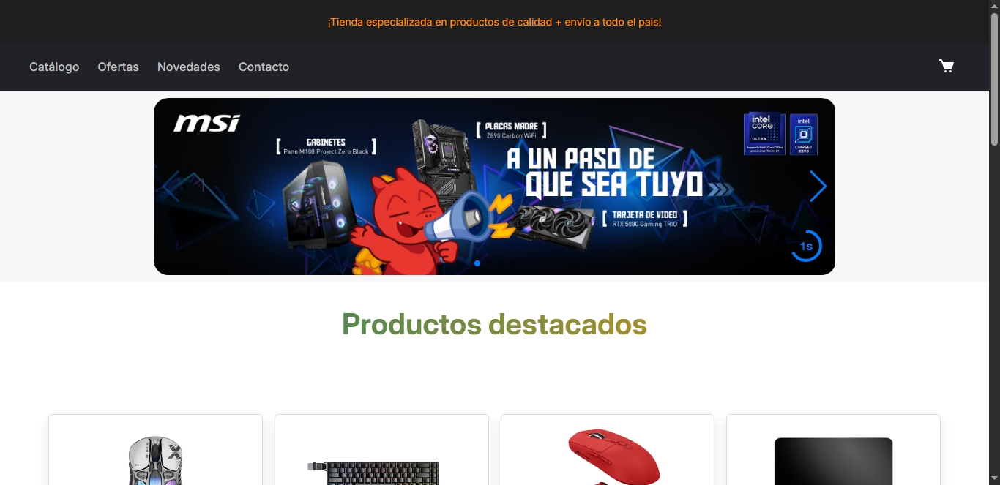

Photo Capture
Pagina que simula camara fotografica para capturar momentos unicos.
Ver proyectoPagina que simula camara fotografica para capturar momentos unicos.
Ver proyecto
Sitio web del hotel "california".
Este proyecto es una página web que simula una tienda en línea especializada en artículos gamer, como periféricos, hardware, accesorios.
Ver proyecto Este proyecto es una herramienta web que permite crear un código QR personalizado para iniciar un chat en WhatsApp con un número específico, incluyendo un mensaje predefinido..
Ver proyecto